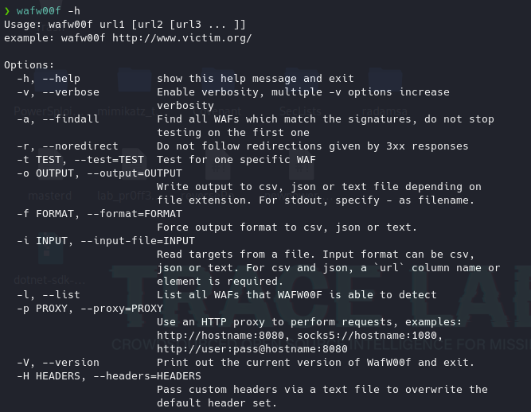
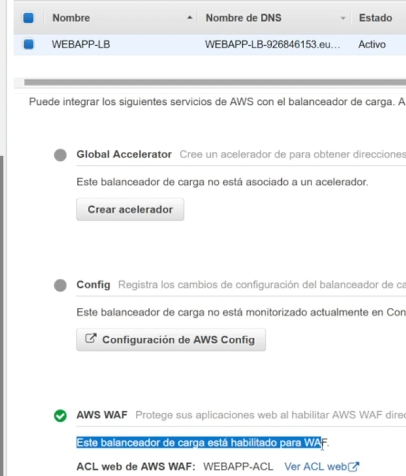
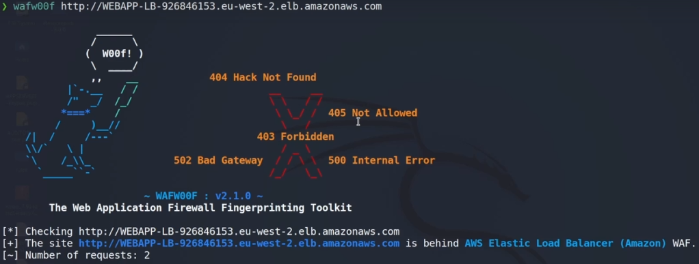
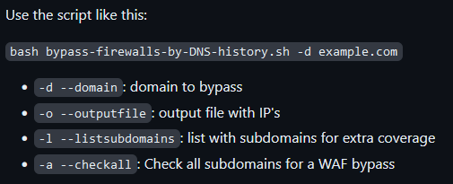

IDENTIFICANDO WAFs
Es posiblemente la que más nos vamos a encontrar de forma estándar.
Se trata de un WAF, que consiste en un Web Aplication Firewall que apantallan la aplicación web y filtrarán peticiones buscando y evitando payloads para prevenir estas explotaciones.
Buscan patrones SQLInjection, crossite scripting, etc...
Para saber como evadirlos debemos saber primero que tipo de WAF tiene la aplicación por delante con la herramienta Wafw00f:
https://github.com/EnableSecurity/wafw00f
Es una herramienta muy popular que implementa las firmas para muchos proveedores.
Por defecto viene en Kali:

Esta herramienta funciona de la siguiente forma:
Podemos habilitar uno para pruebas en AWS>

Para detectar qué tecnología está usando el WAF:
wafw00f URL del dominio

Como se indica aquí el servicio se encuentra detrás de un WAF y te indica que versión y qué tecnología está usando.
Esto es importante por que la evasión de los WAF van dirigidas en función de la tecnología que estén utilizando.
Lo bueno de esta herramienta es que es muy poco intrusiva.
En producción normalmente todas las empresas que ofrecen su aplicación web que tengan medianamente buenos recursos van a estar apantalladas por un WAF en sus aplicaciones principales.
Por supuesto estas aplicaciones WAF filtrarán cualquier tipo de análisis de vulnerabilidades que hagamos en la aplicación web
EVADIENDO WAFs
No es una tarea nada sencilla, lo más óptimo sería intentar buscar otros subdominios en los que potencialmente no haya estas aplicaciones apantallando.
Esto es común porque cuando se contrata un proveedor de WAF este te cobra en función de a los subdominios o dominios que quieras aplicarlo y obviamente este suelen aplicarlo a los que se usan de forma pública, más se ven y más tráfico tienen.
Ahora bien para poder hacer un Bypass del WAF podemos optar varías alternativas:
De igual forma que hacíamos con el balanceador sería encontrar la dirección IP pública del servidor Web.
Para esto hay una herramienta concreta.
https://github.com/vincentcox/bypass-firewalls-by-DNS-history
Utiliza los records de histórico de DNS y trata de identificar si hay una dirección Ip asignada al dominio indicado ya que es posible que en algún momento el dominio no tuviese un WAF por lo que en servidores DNS tendría asociado su servidor web directamente al dominio y posteriormente se añadió el WAF.
Necesita un repositorio adicional:
sudo apt install jq

El script también obtiene las direcciones IP de los subdominios ya que en algunas ocasionas esas Ip que no están protegidas apuntan también al mismo servidor web.
Debido a que un firewall se trata de una tecnología que parsea mediante heurísticas y patrones los paquetes del tráfico pues trata de encontrarlos y bloquearlos.
Por lo tanto algo que se puede intentar es codificar los caracteres, insertar el código Javascript o HTML que no cumpla los estándares, etc
Es algo complejo y hay que estar siempre actualizados ya que es algo que va siendo parcheado continuamente.
En este caso podemos usar algunas fuentes de información como:
Se tratan de bypass actuales o relativamente actuales.
Otra herramienta puede ser:
https://github.com/nemesida-waf/waf-bypass
Se trata de una herramienta que lanza varios payloads contra el dominio y testea cuales detecta y cuales no.
Es una herramienta muy intrusiva que podría dejar fuera de servicio el WAF.
https://github.com/Ekultek/WhatWaf